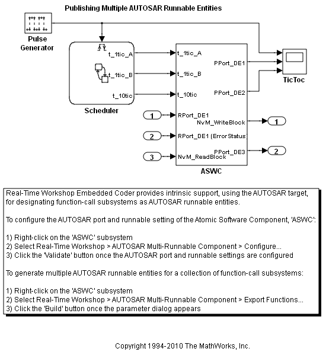
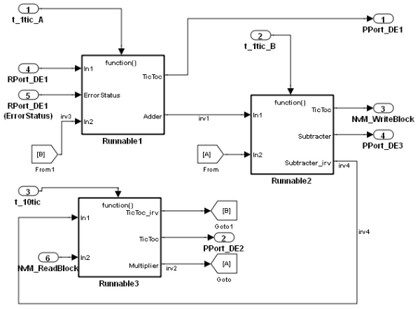

AUTOSAR Code Generation for Multiple Runnable Entities
This demonstration shows you how to configure and generate AUTOSAR-compliant code and export AUTOSAR software component description XML files for a Simulink® model with multiple runnable entities.
Contents
Overview of Multi-Runnable Support
You can use the rtwdemo_autosar_multirunnables model to see how to construct a Simulink model to designate multiple runnable entities.
- Open the model rtwdemo_autosar_multirunnables.
% Model defines modelName = 'rtwdemo_autosar_multirunnables'; % open the model open_system( modelName );
Designate Multiple Runnable Entities
Double-click the ASWC subsystem, which represents the atomic software component. You can see the multiple runnable entities that compose the atomic software component. Each function-call subsystem defines a runnable entity. This model contains three function-call subsystems: Runnable1, Runnable2, Runnable3. An additional runnable entity aggregating the initialization functions for each of the function-call subsystems is also created at code generation.
% open the ASWC subsystem open_system( [modelName, '/ASWC'] );
Define the Inter-RunnableVariables
Inter-runnable variables ensure data consistency between runnable entities. You define these variables through the signals that connect the entities. The signals are labeled with their inter-runnable variable name. This model has four inter-runnable variables: irv1, irv2, irv3, irv4. The interrunnable variables may route through Goto and From blocks, but any labels present on the respective line segments must be consistent.
Change the AUTOSAR Port Settings
Overview of the AUTOSAR Interface dialog
You can change the AUTOSAR port settings.
- Right-click on the ASWC subsystem and select: Real-Time Workshop > AUTOSAR Multi-Runnable Component > Configure
- Click the Validate button once you are happy with your changes.
Generate AUTOSAR-Compliant Code
To generate AUTOSAR-compliant code from the model:
- Right-click on the ASWC subsystem and select: Real-Time Workshop > AUTOSAR Multi-Runnable Component > Export Functions
- Click the Build button once the parameter dialog appears.
An alternative method to generate AUTOSAR-compliant code from the model is to execute the following command.
rtwbuild( [modelName, '/ASWC'], 'Mode', 'ExportFunctionCalls');
### Starting Real-Time Workshop build procedure for model: ASWC ### Generating XML files description for model: ASWC ### Successful completion of Real-Time Workshop code generation for model: ASWC
NOTE: Merge into the Authoring Tool
This demonstration makes use of BasicSoftwarePorts. If you intend to import the generated XML files into an AUTOSAR authoring tool, you should include the server interface referenced by the BasicSoftwarePorts (NvMInterface.arxml).